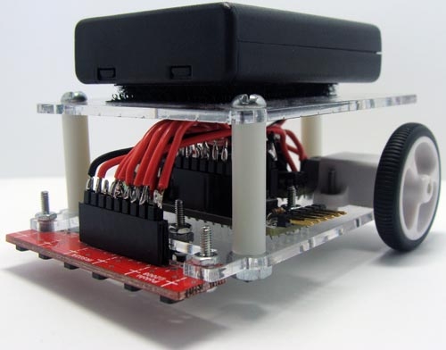
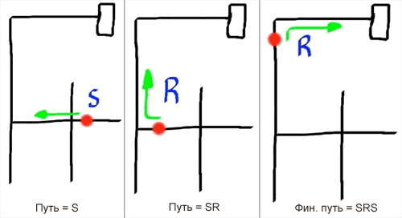

Робот проходящий лабиринты

В статье описано создание робота, который ездит по линиям и может проехать через лабиринт, а потом кратчайшим путем вернутся в начало. Этот робот получился у меня с 3-ей попытки.
Для начала, видео работы робота:
Список деталей:
2 микродвигателя.
Пара кронштейнов для двигателя.
Пара колес.
Шарик и корпус.
Аналоговые датчики отражения.
Болты и гайки #2.
Arduino RBBB
Драйвер для моторов.
Держатель 4х AAA батарей.
4 аккумулятора AAA.
Болты, гайки, шайбы и стойки.
Провода.
Припой.
Инструменты:
Паяльник.
Отвертка.
Плоскогубцы.
Теория
Есть две задачи которые надо решить: найти выход и оптимизировать обратный путь.
Для обнаружения выхода я руководствовался методом левой руки. Представьте, что вы находитесь в лабиринте и постоянно держите левую руку на стене. В конце концов, это позволит вам выйти из незамкнутого лабиринта. Робот работает только с незамкнутыми лабиринтами.
Способ левой руки описывается простыми условиями:
- Если вы можете повернуть налево, поверните налево.
- Если вы можете двигаться прямо, то двигайтесь прямо.
- Если вы можете повернуть направо, поверните направо.
- Если вы в тупике, развернитесь.
Робот должен принимать решение на перекрестке. Если робот на повороте не поворачивает, то он движется прямо. Каждое решение принятое роботом записывается в его памяти для построения оптимального обратного маршрута
L = Левый поворот
R = Правый поворот
S = Пропуск поворота
B = Разворот.
На картинке выше показан этот метод в действии. Путь к выходу - это LBLLBSR.

Мы должны превратить путь LBLLBSR в оптимальный путь SRR. Для этого необходимо найти место где робот повернул не туда. "B" это разворот, который может произойти в тупике, т.е. на неверном пути.Чтобы
оптимизировать путь мы должны заменить "B" на что то другое.
Давайте рассмотрим первые 3 действия LBLLBSR - LBL. Вместо того, чтобы повернуть налево, развернуться и опять повернуть налево, робот должен был пойти прямо. Таким образом, мы можем сказать, что LBL = S.
Вот полный список подобных замен:
LBR = B
LBS = R
RBL = B
SBL = R
SBS = B
LBL = S
В лабиринте могут быть не все эти повороты, но они необходимы. Некоторые из них даже возвращают B обратно. Это необходимо для дальнейшей правильной оптимизации пути.
LBL = S, новый путь SLBSR. LBS = R, новый путь SRR. Как вы видите, мы получили оптимальный путь. Мой робот оптимизирует путь во время движения. Путь хранится в массиве, и каждый раз перед сохранением хода он проверяет, что предыдущий ход не B, а если В, то оптимизирует путь. Роботу необходимо знать по крайней мере 3 последних хода, для оптимизации алгоритма прохождения пути.
Рассмотрим другой пример.
Если использовать правило левой руки для вышеприведенного лабиринта, то получим следующий алгоритм: LLLBLLLRBLLBSRSRS
Начинаем сокращать:
LL (LBL = S) LL (RBL = B) (LBS = R) RSRS = LLSLLBRRSRS
Продолжаем:
LLSL(LBR = B)RSRS = LLSLBRSRS
Продолжаем:
LLSBSRS
Продолжаем:
LL (SBS = B)RS = LLBRS
Продолжаем:
L (LBR = B)S = LBS
Итого:
LBS = R
Шасси
Шасси робота сделано из акрила толщиной 0.8 и вырезано лазером. К статье прилагается файл AutoCAD с чертежом. Если у вас нет возможности точно повторить его, можете сделать его как вам удобно. На функционал это не повлияет, возможно придётся немного поправить код.
Нижняя часть имеет отверстия для крепежа двигателей, Arduino, металлического шарика, датчика и верхней части. В верхней части есть одно больше отверстие для проводов от аккумулятора, который крепится на липучки и отверстия для прикрепления низа.
Установка привода колес
Я просто прикрепил каждый двигатель при помощи двух болтов. После этого, я одел на ось колёса простым надавливанием. Совместите D образный вал с отверстием в центре колеса.
Arduino
Следуйте инструкциям по сборке Arduino RBBB. Вам нужно будет отрезать часть платы для уменьшения размеров. Если вы не нуждаетесь в разъеме питания и стабилизаторе просто отрежьте их. Для этого можно использовать ножницы по металлу, пилу по металлу или любой подобный инструмент. Не паяйте на плату разъёмы кроме тех, которые необходимы для программирования по порту FTDI. Потом припаяйте 9-контактный разъем на левой стороне платы на контакты от "5В" до "А0". Позже к ним будет подключен датчик. Припаяйте 4-контактный разъем на правую сторону платы на контакты от "D5" до"D8". К ним будет присоединён контроллер двигателя. Припаяйте 2-контактный разъем к GND и 5V. На них будет подаваться питание.
Контроллер двигателя
Я разработал и приложил печатную плату в формате Eagle для контроллера двигателя.
Если вы не используете плату, вы можете сделать это навесным монтажом.
Первый двигатель подключается к контактам, которые я назвал "М1-А" и "M1-B". Второй двигатель подключается к "М2" и "М2-B". 7 вывод Arduino подключается к первому входу первого двигателя "В 1А". 6 вывод Arduino подключается к "В1B". 5 вывод Arduino подключается к первому входу второго двигателя "В2А". 8 вывод подключается к "В 2В". Питание и GND подключается к +5В и GND контактам Arduino.
Датчики
Изначально датчик продается в виде платы из 8 датчиков. Два датчик по краям могут быть удалены. 9-контактный разъем должен быть припаян к датчику от "GND" до "6". Потом к ним подключается ответная часть провода, от которой идут к Arduino.
Эти датчики уменьшают напряжение в зависимость от того, как сильно ИК-лучи отражаются от поверхности. Мы можем использовать их для обнаружения белых и черных участков лабиринта. Датчик выдает напряжение около 0В при обнаружении белой поверхности и напряжение около Vin при обнаружении тёмной поверхности.
Сборка верхней части
Прикрепите верхнюю часть к нижней, при помощи болтов и стоек. Аккумулятор прикрепите к ней при помощи липучки. Закрепите верхнюю палубу. Используйте липучку для крепления аккумулятора. Пропустите провода от него через большее отверстие в верхней части. Мой аккумулятор имеет встроенный выключатель питания. Я обнаружил, что проще не ставить винт на крышке аккумулятора. Она и так неплохо держится, а отсутствие винта позволяет быстро вынуть один из аккумуляторов.
Подключение и установка датчиков
Датчик крепится при помощи болтов к нижней части. Вывод GND на дальней левой части датчика подключается к GND Arduino. Следующий вывод это Vcc, который подключается к 5В Arduino. Контакты 6 - 1 аналоговых датчиков подключены к контактам АЦП 5 – 0 Arduino. Т.е. контакт 6 датчика подключен к контакту АЦП 5 Arduino, контакт 5 датчика подключен к 4 Arduino, и т.д
Подключение питания
Просто припаяйте провода от аккумулятора к Arduino. Аккумулятор имеет встроенный выключатель, поэтому можно просто припаять их. Аппаратная часть робота завершена!
Программа
Программа состоит из нескольких функций, которые отвечают за алгоритм прохождения лабиринта. Функция "левой руки" считывает показания датчиков и управляет перемещением робота по вышеизложенным правилам. Функция поворотов сделана так, что робот продолжает поворачиваться, пока не заметит чёрную линию, а когда он её заметит, он поедет по ней. Также есть функция измерения длины линии и скорости робота.
Более подробно следует описать функцию оптимизации пути. На каждом перекрёстке записывается куда повернул робот, и если этот поворот привел к развороту "B", то эти 3 буквы заменяются одной как описано выше.
Также есть функция отправки робота обратно по кратчайшему пути, когда он был сначала убран, а потом возвращен назад в лабиринт.
Скачать код для Arduino, шаблон Autocad и файл плат в Eagle вы можете ниже